BlueCast¶


A lightweight and fast auto-ml library. BlueCast focuses on a few model architectures (on default Xgboost only) and a few preprocessing options (only what is needed for Xgboost). This allows for a much faster development cycle and a much more stable codebase while also having as few dependencies as possible for the library. Despite being lightweight in its core BlueCast offers high customization options for advanced users. Find the full documentation here.
Installation¶
Installation for end users¶
From PyPI:
pip install bluecast
Using a fresh environment with Python 3.9 or higher is recommended. We consciously do not support Python 3.8 or lower to prevent the usage of outdated Python versions and issues connected to it.
Installation for developers¶
Clone the repository:
Create a new conda environment with Python 3.9 or higher
run
pip install poetryto install poetry as dependency managerrun
poetry installto install all dependencies
General usage¶
Basic usage¶
The module blueprints contains the main functionality of the library. The main
entry point is the Blueprint class. It already includes needed preprocessing
(including some convenience functionality like feature type detection)
and model hyperparameter tuning.
from bluecast.blueprints.cast import BlueCast
automl = BlueCast(
class_problem="binary",
)
automl.fit(df_train, target_col="target")
y_probs, y_classes = automl.predict(df_val)
BlueCast has simple utilities to save and load your pipeline:
from bluecast.general_utils.general_utils import save_to_production, load_for_production
# save pipeline including tracker
save_to_production(automl, "/kaggle/working/", "bluecast_cv_pipeline")
# in production or for further experiments this can be loaded again
automl = load_for_production("/kaggle/working/", "bluecast_cv_pipeline")
Since version 0.80 BlueCast offers regression as well:
from bluecast.blueprints.cast_regression import BlueCastRegression
automl = BlueCast(
class_problem="regression",
)
automl.fit(df_train, target_col="target")
y_hat = automl.predict(df_val)
Advanced usage¶
Explanatory analysis¶
BlueCast offers a simple way to get a first overview of the data:
from bluecast.eda.analyse import (
bi_variate_plots,
univariate_plots,
plot_count_pairs,
correlation_heatmap,
correlation_to_target,
plot_pca,
plot_theil_u_heatmap,
plot_tsne,
check_unique_values,
plot_null_percentage,
mutual_info_to_target,
plot_pie_chart,
)
from bluecast.preprocessing.feature_types import FeatureTypeDetector
# Here we automatically detect the numeric columns
feat_type_detector = FeatureTypeDetector()
train_data = feat_type_detector.fit_transform_feature_types(train_data)
# detect columns with a very high share of unique values
many_unique_cols = check_unique_values(train_data, feat_type_detector.cat_columns)
# plot the percentage of Nulls for all features
plot_pie_chart(
synthetic_train_test_data[0],
"categorical_feature_1",
)
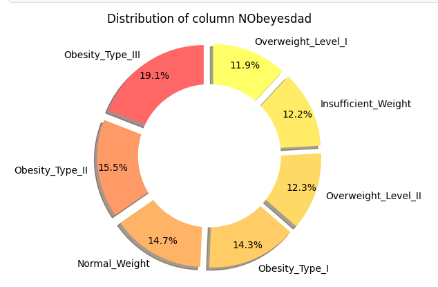
# plot the percentage of Nulls for all features
plot_null_percentage(
train_data.loc[:, feat_type_detector.num_columns],
)
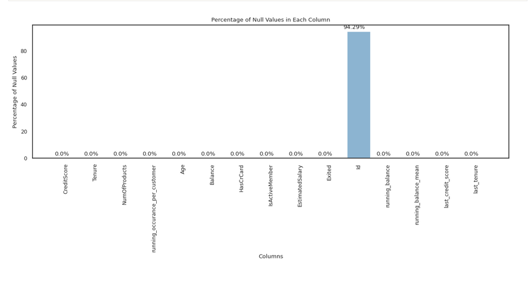
# show univariate plots
univariate_plots(
train_data.loc[:, feat_type_detector.num_columns], # here the target column EC1 is already included
)
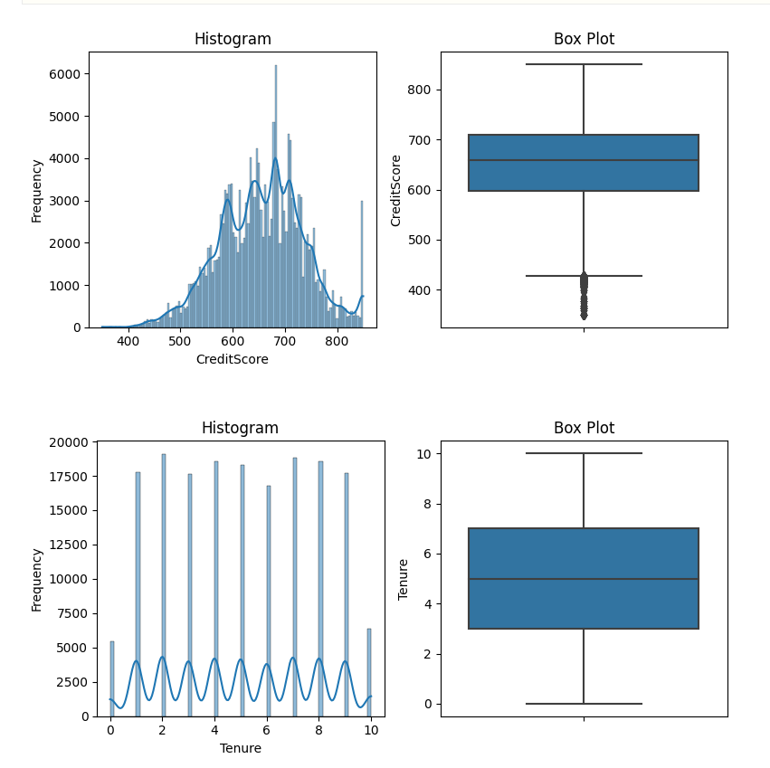
# show bi-variate plots
bi_variate_plots(
train_data.loc[:, feat_type_detector.num_columns],
"EC1"
)
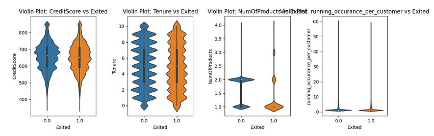
# show bi-variate plots
plot_count_pairs(
train,
test,
cat_cols=train_data.loc[:, feat_type_detector.cat_columns],
)
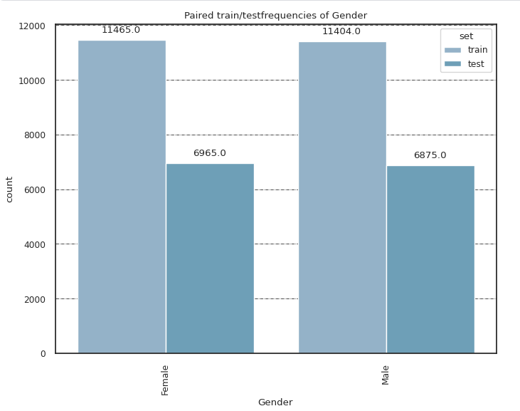
# show correlation to target
correlation_to_target(train_data.loc[:, feat_type_detector.num_columns])
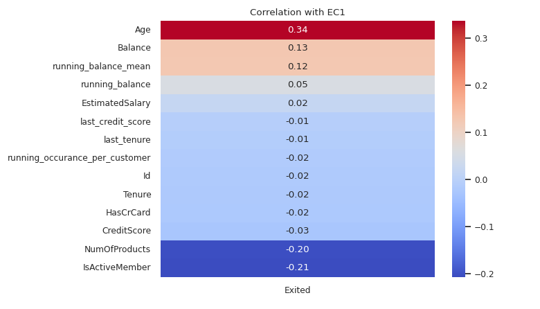
# show correlation heatmap
correlation_heatmap(train_data.loc[:, feat_type_detector.num_columns])
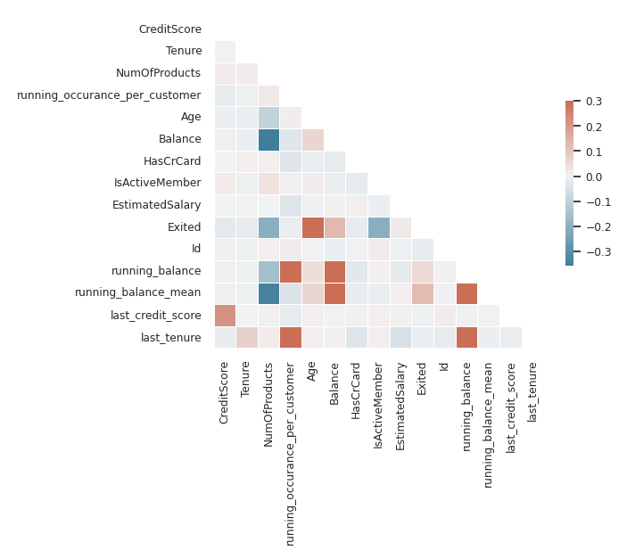
# show a heatmap of assocations between categorical variables
theil_matrix = plot_theil_u_heatmap(train_data, feat_type_detector.cat_columns)
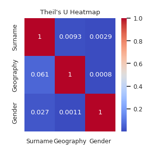
# show mutual information of categorical features to target
# features are expected to be numerical format
# class problem can be any of "binary", "multiclass" or "regression"
extra_params = {"random_state": 30}
mutual_info_to_target(train_data.loc[:, feat_type_detector.num_columns], "EC1", class_problem="binary", **extra_params)
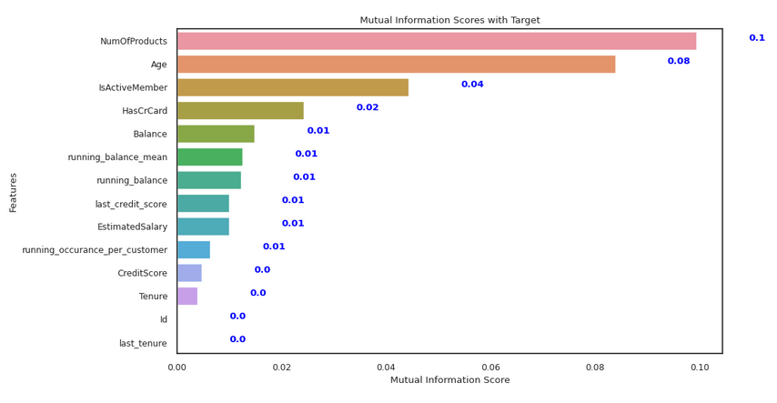
## show feature space after principal component analysis
plot_pca(
train_data.loc[:, feat_type_detector.num_columns],
"target"
)
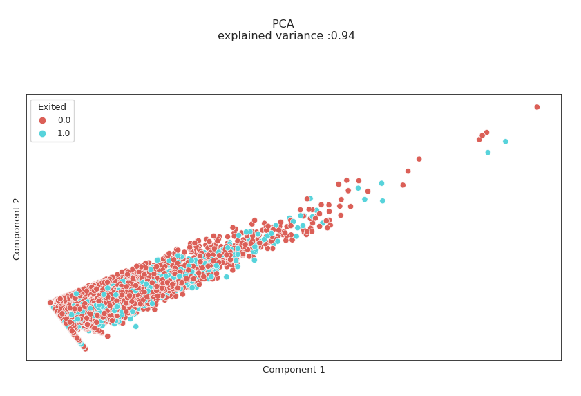
## show how many components are needed to explain certain variance
plot_pca_cumulative_variance(
train_data.loc[:, feat_type_detector.num_columns],
"target"
)
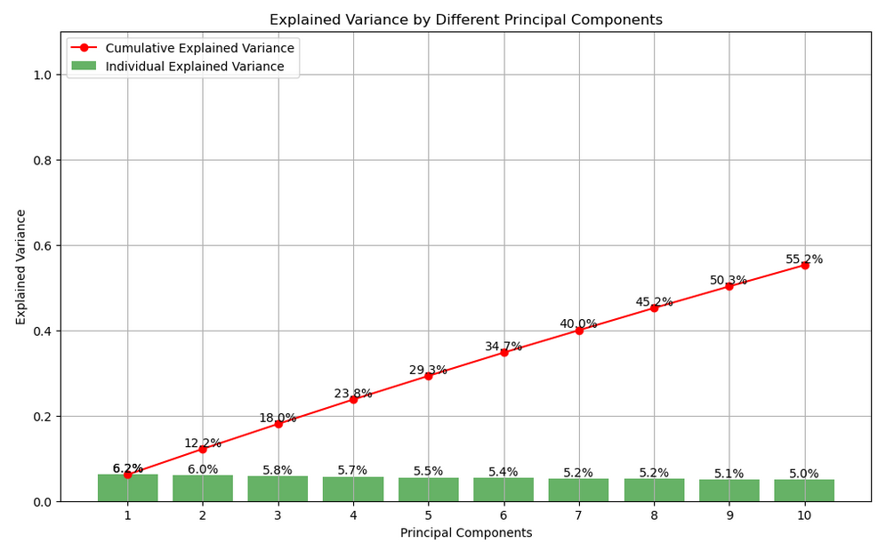
# show feature space after t-SNE
plot_tsne(
train_data.loc[:, feat_type_detector.num_columns],
"target",
perplexity=30,
random_state=0
)
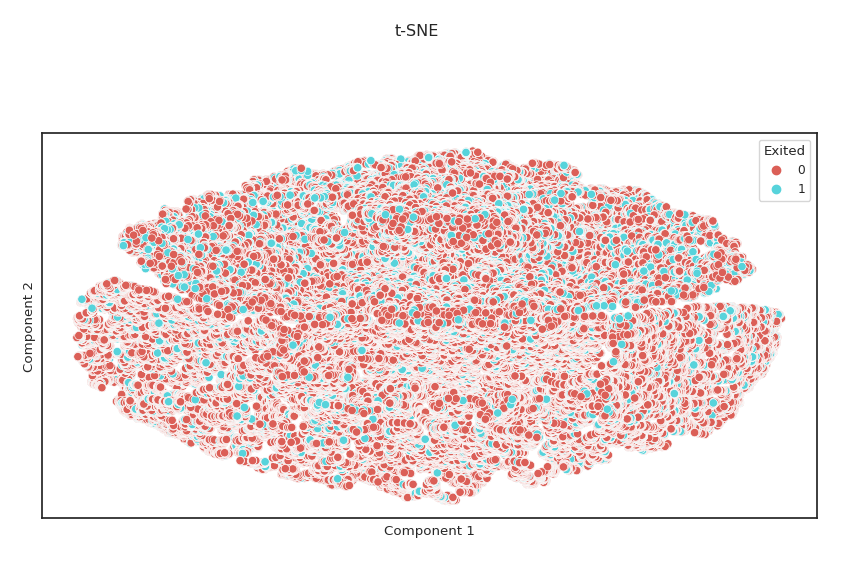
Leakage detection¶
With big data and complex pipelines data leakage can easily sneak in. To detect leakage BlueCast offers two functions:
from bluecast.eda.data_leakage_checks import (
detect_categorical_leakage,
detect_leakage_via_correlation,
)
# Detect leakage of numeric columns based on correlation
result = detect_leakage_via_correlation(
train_data.loc[:, feat_type_detector.num_columns], "target", threshold=0.9
)
# Detect leakage of categorical columns based on Theil's U
result = detect_categorical_leakage(
train_data.loc[:, feat_type_detector.cat_columns], "target", threshold=0.9
)
Enable cross-validation¶
While the default behaviour of BlueCast is to use a simple train-test-split, cross-validation can be enabled easily:
from bluecast.blueprints.cast import BlueCast
from bluecast.config.training_config import TrainingConfig
# Create a custom training config and adjust general training parameters
train_config = TrainingConfig()
train_config.hypertuning_cv_folds = 5 # default is 1
# Pass the custom configs to the BlueCast class
automl = BlueCast(
class_problem="binary",
conf_training=train_config,
)
automl.fit(df_train, target_col="target")
y_probs, y_classes = automl.predict(df_val)
This will use Xgboost’s inbuilt cross validation routine which allows BlueCast to execute early pruning on not promising hyperparameter sets. This way BlueCast can test many more hyperparameters than usual cross validation.
Enable even more overfitting-robust cross-validation¶
There might be situations where a preprocessing step has a high risk of overfitting and needs even more careful evaluation (i.e. oversampling techniques). For such scenarios BlueCast offers a solution as well.
from bluecast.blueprints.cast import BlueCast
from bluecast.config.training_config import TrainingConfig
# Create a custom training config and adjust general training parameters
train_config = TrainingConfig()
train_config.hypertuning_cv_folds = 5 # default is 1
train_config.precise_cv_tuning = True # this enables the better routine
# this only makes sense if we have an overfitting risky step
custom_preprocessor = MyCustomPreprocessing() # see section Custom Preprocessing for details
# Pass the custom configs to the BlueCast class
automl = BlueCast(
class_problem="binary",
conf_training=train_config,
custom_in_fold_preprocessor=custom_preprocessor # this happens during each fold
)
automl.fit(df_train, target_col="target")
y_probs, y_classes = automl.predict(df_val)
The custom in fold preprocessing takes place within the cross validation and executes the step on each fold. The evaluation metric is special here: Instead of calculating matthews correlation coefficient reversed only, it applied increasingly random noise to the eval dataset to find an even more robust hyperparameter set.
This is much more robust, but does not offer early pruning and is much slower. BlueCastCV supports this as well.
Please note that this is an experimental feature.
Gaining extra performance¶
By default BlueCast uses Optuna’s Bayesian hyperparameter optimization,
however Bayesian methods give an estimate and do not necessarly find
the ideal spot, thus BlueCast has an optional GridSearch setting
that allows BlueCast to refine some of the parameters Optuna has found.
This can be enabled by setting enable_grid_search_fine_tuning to True.
This fine-tuning step uses a different random seed than the autotuning
routine (seed from the settings + 1000).
from bluecast.blueprints.cast import BlueCast
from bluecast.config.training_config import TrainingConfig
# Create a custom training config and adjust general training parameters
train_config = TrainingConfig()
train_config.hypertuning_cv_folds = 5 # default is 1
train_config.enable_grid_search_fine_tuning = True # default is False
train_config.gridsearch_tuning_max_runtime_secs = 3600 # max runtime in secs
train_config.gridsearch_nb_parameters_per_grid = 5 # increasing this means X^3 trials atm
# Pass the custom configs to the BlueCast class
automl = BlueCast(
class_problem="binary",
conf_training=train_config,
)
automl.fit(df_train, target_col="target")
y_probs, y_classes = automl.predict(df_val)
This comes with a tradeoff of longer runtime. This behaviour can be further controlled with two parameters:
gridsearch_nb_parameters_per_grid: Decides how many steps the grid shall have per parametergridsearch_tuning_max_runtime_secs: Sets the maximum time in seconds the tuning shall run. This will finish the latest trial nd will exceed this limit though.
Use multi-model blended pipeline¶
By default, BlueCast trains a single model. However, it is possible to
train multiple models with one call for extra robustness. BlueCastCV
has a fit and a fit_eval method. The fit_eval method trains the
models, but also provides out-of-fold validation. Also BlueCastCV
allows to pass custom configurations.
from bluecast.blueprints.cast_cv import BlueCastCV
from bluecast.config.training_config import TrainingConfig, XgboostTuneParamsConfig
# Pass the custom configs to the BlueCast class
automl = BlueCastCV(
class_problem="binary",
#conf_training=train_config,
#conf_xgboost=xgboost_param_config,
#custom_preprocessor=custom_preprocessor, # this takes place right after test_train_split
#custom_last_mile_computation=custom_last_mile_computation, # last step before model training/prediction
#custom_feature_selector=custom_feature_selector,
)
# this class has a train method:
# automl.fit(df_train, target_col="target")
automl.fit_eval(df_train, target_col="target")
y_probs, y_classes = automl.predict(df_val)
Also here a variant for regression is available:
from bluecast.blueprints.cast_cv_regression import BlueCastCVRegression
from bluecast.config.training_config import TrainingConfig, XgboostTuneParamsConfig
# Pass the custom configs to the BlueCast class
automl = BlueCastCVRegression(
class_problem="regression",
#conf_training=train_config,
#conf_xgboost=xgboost_param_config,
#custom_preprocessor=custom_preprocessor, # this takes place right after test_train_split
#custom_last_mile_computation=custom_last_mile_computation, # last step before model training/prediction
#custom_feature_selector=custom_feature_selector,
)
# this class has a train method:
# automl.fit(df_train, target_col="target")
automl.fit_eval(df_train, target_col="target")
y_probs, y_classes = automl.predict(df_val)
Categorical encoding¶
By default, BlueCast uses onehot and target encoding. An orchestrator measures the
columns’ cardinality and routes each categorical column to onehot or target encoding.
Onehot encoding is applied when the cardinality is less or equal
cardinality_threshold_for_onehot_encoding from the training config (5 by default).
This behaviour can be changed in the TrainingConfig by setting cat_encoding_via_ml_algorithm
to True. This will change the expectations of custom_last_mile_computation though.
If cat_encoding_via_ml_algorithm is set to False, custom_last_mile_computation
will receive numerical features only as target encoding will apply before. If cat_encoding_via_ml_algorithm
is True (default setting) custom_last_mile_computation will receive categorical
features as well, because Xgboost’s or a custom model’s inbuilt categorical encoding
will be used.
Custom training configuration¶
Despite e2eml, BlueCast allows easy customization. Users can adjust the
configuration and just pass it to the BlueCast class. Here is an example:
from bluecast.blueprints.cast import BlueCast
from bluecast.config.training_config import TrainingConfig, XgboostTuneParamsConfig
# Create a custom tuning config and adjust hyperparameter search space
xgboost_param_config = XgboostTuneParamsConfig()
xgboost_param_config.steps_max = 100
xgboost_param_config.max_leaves_max = 16
# Create a custom training config and adjust general training parameters
train_config = TrainingConfig()
train_config.hyperparameter_tuning_rounds = 10
train_config.autotune_model = False # we want to run just normal training, no hyperparameter tuning
# We could even just overwrite the final Xgboost params using the XgboostFinalParamConfig class
# Pass the custom configs to the BlueCast class
automl = BlueCast(
class_problem="binary",
conf_training=train_config,
conf_xgboost=xgboost_param_config,
)
automl.fit(df_train, target_col="target")
y_probs, y_classes = automl.predict(df_val)
Custom preprocessing¶
The BlueCast class also allows for custom preprocessing. This is done by
an abstract class that can be inherited and passed into the BlueCast class.
BlueCast provides two entry points to inject custom preprocessing. The
attribute custom_preprocessor is called right after the train_test_split.
The attribute custom_last_mile_computation will be called before the model
training or prediction starts (when only numerical features are present anymore)
and allows users to execute last computations (i.e. sub sampling or final calculations).
from bluecast.blueprints.cast import BlueCast
from bluecast.preprocessing.custom import CustomPreprocessing
# Create a custom tuning config and adjust hyperparameter search space
xgboost_param_config = XgboostTuneParamsConfig()
xgboost_param_config.steps_max = 100
xgboost_param_config.max_leaves_max = 16
# Create a custom training config and adjust general training parameters
train_config = TrainingConfig()
train_config.hyperparameter_tuning_rounds = 10
train_config.autotune_model = False # we want to run just normal training, no hyperparameter tuning
# We could even just overwrite the final Xgboost params using the XgboostFinalParamConfig class
class MyCustomPreprocessing(CustomPreprocessing):
def __init__(self):
self.trained_patterns = {}
def fit_transform(
self, df: pd.DataFrame, target: pd.Series
) -> Tuple[pd.DataFrame, pd.Series]:
num_columns = df.drop(['Beta', 'Gamma', 'Delta', 'Alpha', 'EJ'], axis=1).columns
cat_df = df[['Beta', 'Gamma', 'Delta', 'Alpha', 'EJ']].copy()
zscores = Zscores()
zscores.fit_all(df, ['Beta', 'Gamma', 'Delta', 'Alpha', 'EJ'])
df = zscores.transform_all(df, ['Beta', 'Gamma', 'Delta', 'Alpha', 'EJ'])
self.trained_patterns["zscores"] = zscores
imp_mean = SimpleImputer(missing_values=np.nan, strategy='median')
num_columns = df.drop(['Beta', 'Gamma', 'Delta', 'Alpha', 'EJ'], axis=1).columns
imp_mean.fit(df.loc[:, num_columns])
df = imp_mean.transform(df.loc[:, num_columns])
self.trained_patterns["imputation"] = imp_mean
df = pd.DataFrame(df, columns=num_columns).merge(cat_df, left_index=True, right_index=True, how="left")
df = df.drop(['Beta', 'Gamma', 'Delta', 'Alpha'], axis=1)
return df, target
def transform(
self,
df: pd.DataFrame,
target: Optional[pd.Series] = None,
predicton_mode: bool = False,
) -> Tuple[pd.DataFrame, Optional[pd.Series]]:
num_columns = df.drop(['Beta', 'Gamma', 'Delta', 'Alpha', 'EJ'], axis=1).columns
cat_df = df[['Beta', 'Gamma', 'Delta', 'Alpha', 'EJ']].copy()
df = self.trained_patterns["zscores"].transform_all(df, ['Beta', 'Gamma', 'Delta', 'Alpha', 'EJ'])
imp_mean = self.trained_patterns["imputation"]
num_columns = df.drop(['Beta', 'Gamma', 'Delta', 'Alpha', 'EJ'], axis=1).columns
df.loc[:, num_columns] = df.loc[:, num_columns].replace([np.inf, -np.inf], np.nan)
df = imp_mean.transform(df.loc[:, num_columns])
df = pd.DataFrame(df, columns=num_columns).merge(cat_df, left_index=True, right_index=True, how="left")
df = df.drop(['Beta', 'Gamma', 'Delta', 'Alpha'], axis=1)
return df, target
# add custom last mile computation
class MyCustomLastMilePreprocessing(CustomPreprocessing):
def custom_function(self, df: pd.DataFrame) -> pd.DataFrame:
df = df / 2
df["custom_col"] = 5
return df
# Please note: The base class enforces that the fit_transform method is implemented
def fit_transform(
self, df: pd.DataFrame, target: pd.Series
) -> Tuple[pd.DataFrame, pd.Series]:
df = self.custom_function(df)
df = df.head(1000)
target = target.head(1000)
return df, target
# Please note: The base class enforces that the fit_transform method is implemented
def transform(
self,
df: pd.DataFrame,
target: Optional[pd.Series] = None,
predicton_mode: bool = False,
) -> Tuple[pd.DataFrame, Optional[pd.Series]]:
df = self.custom_function(df)
if not predicton_mode and isinstance(target, pd.Series):
df = df.head(100)
target = target.head(100)
return df, targe
custom_last_mile_computation = MyCustomLastMilePreprocessing()
custom_preprocessor = MyCustomPreprocessing()
# Pass the custom configs to the BlueCast class
automl = BlueCast(
class_problem="binary",
conf_training=train_config,
conf_xgboost=xgboost_param_config,
custom_preprocessor=custom_preprocessor, # this takes place right after test_train_split
custom_last_mile_computation=custom_last_mile_computation, # last step before model training/prediction
)
automl.fit(df_train, target_col="target")
y_probs, y_classes = automl.predict(df_val)
Custom feature selection¶
BlueCast offers automated feature selection. On default the feature
selection is disabled, but BlueCast raises a warning to inform the
user about this option. The behaviour can be controlled via the
TrainingConfig.
from bluecast.blueprints.cast import BlueCast
from bluecast.preprocessing.custom import CustomPreprocessing
from bluecast.config.training_config import TrainingConfig
# Create a custom training config and adjust general training parameters
train_config = TrainingConfig()
train_config.hyperparameter_tuning_rounds = 10
train_config.autotune_model = False # we want to run just normal training, no hyperparameter tuning
train_config.enable_feature_selection = True
# Pass the custom configs to the BlueCast class
automl = BlueCast(
class_problem="binary",
conf_training=train_config,
)
automl.fit(df_train, target_col="target")
y_probs, y_classes = automl.predict(df_val)
Also this step can be customized. The following example shows how to:
from bluecast.config.training_config import TrainingConfig
from bluecast.preprocessing.custom import CustomPreprocessing
from sklearn.feature_selection import RFECV
from sklearn.metrics import make_scorer, matthews_corrcoef
from sklearn.model_selection import StratifiedKFold
from typing import Optional, Tuple
# Create a custom training config and adjust general training parameters
train_config = TrainingConfig()
train_config.enable_feature_selection = True
# add custom feature selection
class RFECVSelector(CustomPreprocessing):
def __init__(self, random_state: int = 0):
super().__init__()
self.selected_features = None
self.random_state = random_state
self.selection_strategy: RFECV = RFECV(
estimator=xgb.XGBClassifier(),
step=1,
cv=StratifiedKFold(5, random_state=random_state, shuffle=True),
min_features_to_select=1,
scoring=make_scorer(matthews_corrcoef),
n_jobs=2,
)
def fit_transform(self, df: pd.DataFrame, target: pd.Series) -> Tuple[pd.DataFrame, Optional[pd.Series]]:
self.selection_strategy.fit(df, target)
self.selected_features = self.selection_strategy.support_
df = df.loc[:, self.selected_features]
return df, target
def transform(self,
df: pd.DataFrame,
target: Optional[pd.Series] = None,
predicton_mode: bool = False) -> Tuple[pd.DataFrame, Optional[pd.Series]]:
df = df.loc[:, self.selected_features]
return df, target
custom_feature_selector = RFECVSelector()
# Create an instance of the BlueCast class with the custom model
bluecast = BlueCast(
class_problem="binary",
conf_feature_selection=custom_feat_sel,
conf_training=train_config,
custom_feature_selector=custom_feature_selector,
# Create some sample data for testing
x_train = pd.DataFrame(
{"feature1": [i for i in range(10)], "feature2": [i for i in range(10)]}
)
y_train = pd.Series([0, 1, 0, 1, 0, 1, 0, 1, 0, 1])
x_test = pd.DataFrame(
{"feature1": [i for i in range(10)], "feature2": [i for i in range(10)]}
x_train["target"] = y_trai
# Fit the BlueCast model using the custom model
bluecast.fit(x_train, "target")
# Predict on the test data using the custom model
predicted_probas, predicted_classes = bluecast.predict(x_test)
Custom ML model¶
For some users it might just be convenient to use the BlueCast class to enjoy convenience features (details see below), but use a custom ML model. This is possible by passing a custom model to the BlueCast class. The needed properties are defined via the BaseClassMlModel class. Here is an example:
from bluecast.ml_modelling.base_classes import (
BaseClassMlModel,
PredictedClasses, # just for linting checks
PredictedProbas, # just for linting checks
)
class CustomModel(BaseClassMlModel):
def __init__(self):
self.model = None
def fit(
self,
x_train: pd.DataFrame,
x_test: pd.DataFrame,
y_train: pd.Series,
y_test: pd.Series,
) -> None:
self.model = LogisticRegression()
self.model.fit(x_train, y_train)
# if you wih to track experiments using an own ExperimentTracker add it here
# or in the fit method itself
def predict(self, df: pd.DataFrame) -> Tuple[PredictedProbas, PredictedClasses]:
predicted_probas = self.model.predict_proba(df)
predicted_classes = self.model.predict(df)
return predicted_probas, predicted_classes
custom_model = CustomModel()
# Create an instance of the BlueCast class with the custom model
bluecast = BlueCast(
class_problem="binary",
ml_model=custom_model,
# Create some sample data for testing
x_train = pd.DataFrame(
{"feature1": [i for i in range(10)], "feature2": [i for i in range(10)]}
)
y_train = pd.Series([0, 1, 0, 1, 0, 1, 0, 1, 0, 1])
x_test = pd.DataFrame(
{"feature1": [i for i in range(10)], "feature2": [i for i in range(10)]}
x_train["target"] = y_trai
# Fit the BlueCast model using the custom model
bluecast.fit(x_train, "target"
# Predict on the test data using the custom model
predicted_probas, predicted_classes = bluecast.predict(x_test)
Please note that custom ML models require user defined hyperparameter tuning. Pre-defined configurations are not available for custom models. Also note that the calculation of SHAP values only works with tree based models by default. For other model architectures disable SHAP values in the TrainingConfig via:
train_config.calculate_shap_values = True
Just instantiate a new instance of the TrainingConfig, update the param as above and pass the config as an argument to the BlueCast instance during instantiation. Feature importance can be added in the custom model definition.
Using the inbuilt ExperientTracker¶
For experimentation environments it can be useful to store all variables and results from model runs. BlueCast has an inbuilt experiment tracker to enhance the provided insights. No setup is required. BlueCast will automatically store all necessary data after each hyperparameter tuning trial.
# instantiate and train BlueCast
from bluecast.blueprints.cast import BlueCast
automl = BlueCast(
class_problem="binary",
)
automl.fit_eval(df_train, df_eval, y_eval, target_col="target")
# access the experiment tracker
tracker = automl.experiment_tracker
# see all stored information as a Pandas DataFrame
tracker_df = tracker.retrieve_results_as_df()
Now from here you could even feed selected columns back into a BlueCast instance and try to predict the eval_score to check the get the feature importance of your experiment data! Maybe you uncover hidden patterns for your model training.
Please note that the number of stored experiments will probably be lower
than the number of started hyperparameter tuning trials. The experiment tracker
is skipped whenever Optuna prunes a trial.
The experiment triggers whenever the fit or fit_eval methods of a BlueCast
class instance are called (also within BlueCastCV). This means for custom
models the tracker will not trigger automatically and has to be added manually.
Use Mlflow via custom ExperientTracker API¶
The inbuilt experiment tracker is handy to start with, however in production environments it might be required to send metrics to a Mlflow server or comparable solutions. BlueCast allows to pass a custom experiment tracker.
# instantiate and train BlueCast
from bluecast.blueprints.cast import BlueCast
from bluecast.cnfig.base_classes import BaseClassExperimentTracker
class CustomExperimentTracker(BaseClassExperimentTracker):
"""Base class for the experiment tracker.
Enforces the implementation of the add_results and retrieve_results_as_df methods.
"""
@abstractmethod
def add_results(
self,
experiment_id: int,
score_category: Literal["simple_train_test_score", "cv_score", "oof_score"],
training_config: TrainingConfig,
model_parameters: Dict[Any, Any],
eval_scores: Union[float, int, None],
metric_used: str,
metric_higher_is_better: bool,
) -> None:
"""
Add results to the ExperimentTracker class.
"""
pass # add Mlflow tracking i.e.
@abstractmethod
def retrieve_results_as_df(self) -> pd.DataFrame:
"""
Retrieve results from the ExperimentTracker class
"""
pass
experiment_tracker = CustomExperimentTracker()
automl = BlueCast(
class_problem="binary",
experiment_tracker=experiment_tracker,
)
automl.fit_eval(df_train, df_eval, y_eval, target_col="target")
# access the experiment tracker
tracker = automl.experiment_tracker
# see all stored information as a Pandas DataFrame
tracker_df = tracker.retrieve_results_as_df()
Custom data drift checker¶
Since version 0.90 BlueCast checks for data drift for numerical and categorical columns. The checks happen on the raw data. Categories will be stored anonymized by default. Data drift checks are not part of the model pipeline, but have to be called separately:
from bluecast.monitoring.data_monitoring import DataDrift
data_drift_checker = DataDrift()
# statistical data drift checks for numerical features
data_drift_checker.kolmogorov_smirnov_test(data, new_data, threshold=0.05)
# show flags
print(data_drift_checker.kolmogorov_smirnov_flags)
# statistical data drift checks for categorical features
data_drift_checker.population_stability_index(data, new_data)
# show flags
print(data_drift_checker.population_stability_index_flags)
# show psi values
print(data_drift_checker.population_stability_index_values)
# QQplot for two numerical columns
data_drift_checker.qqplot_two_samples(train["feature1"], test["feature1"], x_label="X", y_label="Y")
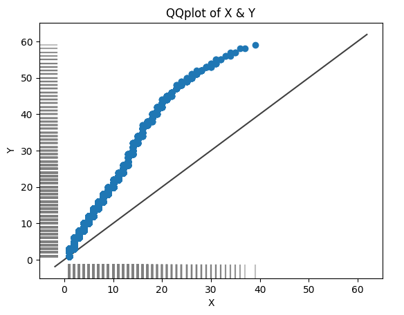
Convenience features¶
Despite being a lightweight library, BlueCast also includes some convenience with the following features:
automatic feature type detection and casting
automatic DataFrame schema detection: checks if unseen data has new or missing columns
categorical feature encoding (target encoding or directly in Xgboost)
datetime feature encoding
automated GPU availability check and usage for Xgboost a fit_eval method to fit a model and evaluate it on a validation set to mimic production environment reality
functions to save and load a trained pipeline
shapley values
ROC AUC curve & lift chart
warnings for potential misconfigurations
The fit_eval method can be used like this:
from bluecast.blueprints.cast import BlueCast
automl = BlueCast(
class_problem="binary",
)
automl.fit_eval(df_train, df_eval, y_eval, target_col="target")
y_probs, y_classes = automl.predict(df_val)
It is important to note that df_train contains the target column while df_eval does not. The target column is passed separately as y_eval.
Code quality¶
To ensure code quality, we use the following tools:
various pre-commit libraries
strong type hinting in the code base
unit tests using Pytest
For contributors, it is expected that all pre-commit and unit tests pass. For new features it is expected that unit tests are added.
Documentation¶
Documentation is provided via Read the Docs
Kaggle competition results and example notebooks¶
Even though BlueCast has been designed to be a lightweight automl framework, it still offers the possibilities to reach very good performance. We tested BlueCast in Kaggle competitions to showcase the libraries capabilities feature- and performance-wise.
How to contribute¶
Contributions are welcome. Please follow the following steps:
Create a new branch from develop branch
Add your feature or fix
Add unit tests for new features
Run pre-commit checks and unit tests (using Pytest)
Adjust the
index.mdfileCopy paste the content of the
index.mdfile into theREADME.mdfilePush your changes and create a pull request
If library or dev dependencies have to be changed, adjust the pyproject.toml.
For readthedocs it is also requited to update the
docs/srtd_requirements.txt file. Simply run:
poetry export --with dev -f requirements.txt --output docs/rtd_requirements.txt
If readthedocs will be able to create the documentation can be tested via:
poetry run sphinx-autobuild docs/source docs/build/html
This will show a localhost link containing the documentation.
Meta¶
Creator: Thomas Meißner – LinkedIn